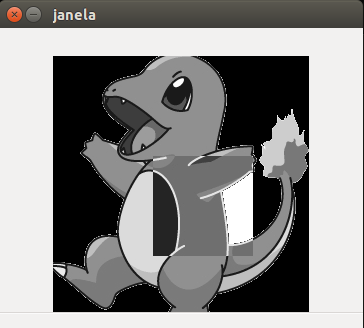
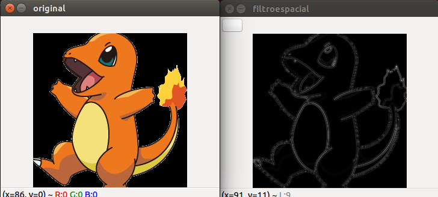

Exercício 3.2 - Negativo

Para deixar a imagem com o efeito negativo você precisa inverter as cores. Isso pode ser feito alterando o valor do pixel para o seu valor contrário. Dessa forma, só precisamos subtrair o valor atual do pixel de 255.
A linha de código abaixo ilustra isso e o código:
image.at

Exercício 3.3 - Troca de Regiões

Esse algoritmo divide a imagem em 4 regiões e em seguida as troca de maneira aleatória.
Primeiramente usamos a função Rect() para recortar 4 retângulos e salvamos as 4 regiões em variáveis, depois criamos um looping para montar a nova imagem com as 4 regiões aleatoriamente como na image acima.
O código desenvolvido segue abaixo:
Exercício 4.2.1 - Preenchendo Regiões
Utilizando o seedfill ele irá pintar cada objeto encontrado com um tom de cinza. Se a imagem possuir mais de 255 objetos, podemos utiizar outro tipo de variável no lugar de unsigned char, pois a diferença no tom de cinza para nós será impeceptível, mas o computador conseguirá contar a quantidade de objeto.
Exercício 4.2.2 - Preenchendo Regiões
Primeiramente limpamos as bordas na imagem, visto que na borda não conseguimos saber se existe buraco ou não.
Para limpar as bordas varremos a imagem na primeira linha e coluna, além de também varrer a última linha e coluna. Se um objeto for encontrado, aplicamos o seefill mudando o valor do pixel para 0, ou seja, ficando o qual o fundo.
Resultado da limpeza nas bordas abaixo:
Em seguida aplicamos o seedfill em toda imagem para o tom de cinza 10. Isso é feito para que o fundo da imagem seja diferenciado dos buracos.
Para contar quantos buracos tem e diferenciar os objetos com buracos dos sem buracos, varremos a imagem procurando por objetos (pixels com valor 255) e salvamos sua coordenada. Se ele não for 255 verificamos se ele é 0 (buraco), caso seja 0, indica que o último valor branco encontrado é um objeto com buraco, assim, aplicamos o seedfill para um tom 150 no buraco, no objeto e incrementamos um contador.
Segue esse trecho de código abaixo:
Segue abaixo retorno final do software:
Exercício 5.2.1 - Histograma
Para equalizar a imagem utilizei a função do openCV equalizeHist() e o código de calculo do histograma disponibilizado pelo professor. Além disso, associei a função equalize com outras do openCV.
O código usado pode ser visto abaixo:
A função cvtColor converte a função de RGN para YCrCb que é um sistema com uma componente de luminância é 2 de cores.
A função split vai separar os canais da imagem sendo 0 o Y a luminância (informação de preto e branco) e 1 e 2 as componentes de cores Cr e Cb respectivamente.
A função equalizeHist é a que realiza de fato a equalização da nossa imagem, essa equalização é feita no primeiro canal o 0, isso por que é nele que está o Y (quantidade de preto de branco).
Merge faz o contrário da função split, ele une os canais.
E a função cvtColor novamente vai converter a imagem, só que dessa vez novamente para o formato RGB
Exercício 5.2.2 - Detector de Movimento Usando Histograma
Esse exercício ainda não foi realizado, pois não consegui uma webcam.
Exercícios 6.2 - Filtro Espacial
Para calcular o laplaciano do gaussiano só precisamos rodar um filtro e depois o outro.
Primeiramente adicionei a opção p para o usuário escolher, quando o usuário escolhe essa opção uma váriavel vira true e a função é desencadeada como mostra o código abaixo:
Dentro do if, nós atribuimos para a variável mask o filtro do gassiano, realizamos um ganho nele e depois aplicamos na imagem com a função filter2D, a função filter2D tem como saída a matriz framelapgau que logo em seguida será a entrada da função filter2D, só que dessa vez ela executa o filtro do laplaciano.
Por fim, a segunda execução do filter2D retorna frameFiltered que é a nossa imagem com o laplaciano do gaussiano.
A imagem abaixo mostra o resultado da aplicação desse filtro e a comparação com o laplaciano e a original.
Original-Laplaciano
Original-Laplaciano do gaussiano

Exercício 7.1 - Tiltshift
Para implementar o efeito utilizamos a função addweighted para fazer a combinação de duas imagens para uma dado coeficiente alfa. Uma imagem será a foto a qual o filtro será aplicado, a outra é a mesma só que borrada através de um filtro da méda e o coeficiente utilizado é uma função que modela a região de desfoque no eixo vertical.
A função utilizada é a seguinte: α(x)=1/2((tanhx−l1)/d−(tanhx−l2)/d)
Onde l1 e l2 delimita a área onde a foto terá foco e d é a intensidade com que a área será desfocada
No algoritmo utilizamos trackbars para escolher a posição que a área de foco estará, o tamanho da área de foco, como também o intensidade do desfoque.
A implementação da função criada para aplicar o filtro e calcular os área segue abaixo:
A função on_trackbar_blend é chamada a cada vez que usamos a trackbar, nela calculamos os valores de l1 e l2 utilizando a posição atual das trackbars, em seguida dentro de um looping chamamos a função alfa_calc que realizará o calculo do coeficiente para cada linha da imagem, após o calculo desse coeficiente, a já referida função addweighted aplica o efeito tiltshift para de cada linha da imagem de cada vez.
Segue abaixo o resultado do efeito: